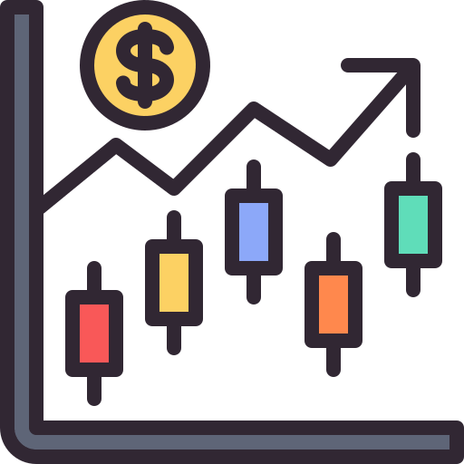
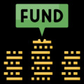
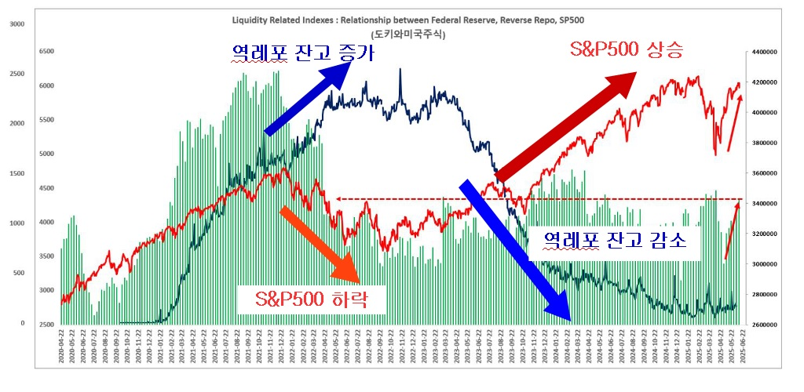

Index = Percentile Rank of (Fed Liquidity − ΔTGA + MMF→Market Flow) vs. Full History
MACRO COMPONENTS1W · 4W · 12W % Change
(Tap an indicator label to see a detailed explanation!)
Central Bank (FED)
US Government...

US Market

MMF (Money Market Fund)
Source: FRED, Office of Financial Research (OFR)
Get a Clear View of US Dollar Liquidity!
Based on verified data (Source: FRED), we visualize US market liquidity using real-time animations.
We show you how money flows between the US Federal Reserve (FED), the Government (TGA), Money Market Funds (MMF), and the Market. Our goal is to help you more easily understand the impact of interest rate changes, quantitative easing, and quantitative tightening, so you can make smarter investment decisions.
Key Features
Real-time Liquidity Flow: Visualize the monthly scale of fund movements between each economic entity (Government, Central Bank, MMF, Market) with animations, making it easy to track the flow of money.
Key Interest Rates: Check important market interest rate indicators like SOFR, EFFR, and Treasury yields in real time and understand what they mean.
Detailed Data Charts: Analyze over 30 key economic indicators — including TGA balance, M2 money supply, and the S&P 500 index — directly with detailed charts by period. An explanation (Info) is also provided for each indicator.
Now explore the complex flow of the economy easily through the visualizations above.
How Should I Interpret the Data?
The animation on the main page represents the "change in fund flow over the past week" between each entity. Here's what the numbers mean.
TGA Balance (Government) (- Negative): Means the government is putting money into the market through reduced bond issuance or increased fiscal spending. (Liquidity Supply)
TGA Balance (Government) (+ Positive): Means the government is absorbing money from the market by collecting more taxes or increasing bond issuance. (Liquidity Absorption)
FED Liquidity (- Negative): Means the FED is pulling money out of the market through quantitative tightening (asset sales), or that financial institutions are absorbing liquidity by parking funds in the FED's reverse repo facility. (Liquidity Absorption)
FED Liquidity (+ Positive): Means the FED is supplying money to the market through quantitative easing (asset purchases), or that financial institutions are redirecting reverse repo funds they had parked at the FED back into the market. (Liquidity Supply)
MMF → FED (+ Positive): Means MMFs are depositing funds via the FED's Reverse Repo (RRP), absorbing liquidity from the market.
MMF → FED (- Negative): Means MMFs are withdrawing reverse repo funds they had deposited at the FED, supplying liquidity to the market.
MMF → Market (+ Positive): Means MMFs are purchasing market assets such as Treasuries and corporate bonds, supplying liquidity to the market.
MMF → Market (- Negative): Means market participants are investing in MMFs, absorbing liquidity from the market into MMFs.
In conclusion, if the total amount of money flowing into the 'Market' (Net Market Flow) is a blue negative (-), it can be interpreted as market liquidity shrinking; if it is a red positive (+), it can be interpreted as liquidity becoming more abundant.
Wondengi's US Liquidity Status
Get a Clear View of US Liquidity!
Key Features
Real-time Liquidity Flow: Visualize the monthly scale of fund movements between each economic entity (Government, Central Bank, MMF, Market) with animations, making it easy to track the flow of money.
Key Interest Rates: Check important market interest rate indicators like SOFR, EFFR, and Treasury yields in real time and understand what they mean.
Detailed Data Charts: Analyze over 30 key economic indicators — including TGA balance, M2 money supply, and the S&P 500 index — directly with detailed charts by period. An explanation (Info) is also provided for each indicator.
Now explore the complex flow of the economy easily through the visualizations below.
(Tap an indicator label to see a detailed explanation!)
Central Bank (FED)
US Government
US Market
Commercial Banks
Source: FRED
Key Interest Rate Indicators
Reverse Repo (RRP) Rate: The rate the FED pays when it borrows funds from financial institutions; it serves as the benchmark for absorbing liquidity from the market.
FED Discount Rate: The interest rate the FED applies when lending to commercial banks, determining the cost of funding for financial institutions.
EFFR: The actual rate applied when banks lend to each other, showing the direction of the FED's monetary policy.
SOFR: An ultra-short-term lending rate secured by Treasuries, directly reflecting liquidity conditions in the short-term funding market.
3-Month Treasury Yield: The yield on 3-month Treasury bills, indicating short-term market rates and inflation expectations.
2-Year Treasury Yield: The yield on 2-year Treasury notes, reflecting medium-term economic outlook.
10-Year Treasury Yield: The yield on 10-year Treasury notes, a key indicator showing the market's expectations for long-term economic growth and inflation.
SOFR-EFFR Spread: The difference between the secured (SOFR) and unsecured (EFFR) short-term lending rates, indicating market liquidity and credit risk conditions. A widening spread can be a sign of tightening liquidity.
US Yield Curve Spread: A leading indicator of recession; when long-term rates fall below short-term rates (an inversion), it suggests a potential economic slowdown ahead.
US Money Status
Key indicators showing how much money is currently held by the US government, banks, and the market.
Interest Rates
Interest rate indicators that represent the cost of funds in the market, used to gauge the economy's health and future direction.
Liquidity
Indicators measuring the total amount of money supply in circulation, used to gauge inflation and the level of economic activity.
Asset Prices
Representative stock market indices that reflect the overall health of the economy and investor sentiment.
Leading Indicators
Indicators that help forecast the future direction of economic activity — a barometer of consumption and industrial activity.
About This Site
"Wondengi's US Liquidity Status" aims to be a compass that keeps you from getting lost in complex economic indicators and data. Through real-time updated data, intuitively grasp where the market's money is flowing right now.
Dollar Liquidity Ultimately Determines Stock Prices.
In 2022, as the US FED's reverse repo balance increased, the S&P 500 fell and the market crashed. Today, the direction and speed of the money supply matter more than ever for the US stock market. That's why "Wondengi's US Liquidity Status" aims to help you easily forecast liquidity flows, predict the stock market's direction, and maximize your returns.

Key Features
Real-time Liquidity Flow: Visualize the monthly scale of fund movements between each economic entity (Government, Central Bank, MMF, Market) with animations, making it easy to track the flow of money.
Key Interest Rates: Check important market interest rate indicators like SOFR, EFFR, and Treasury yields in real time and understand what they mean.
Detailed Data Charts: Analyze over 30 key economic indicators — including TGA balance, M2 money supply, and the S&P 500 index — directly with detailed charts by period. An explanation (Info) is also provided for each indicator.
How Should I Interpret the Data?
The animation on the main page represents the "change in fund flow over the past week" between each entity. Here's what the numbers mean.
TGA Balance, Government (- Negative): Means the government is putting money into the market through reduced bond issuance or increased fiscal spending. (Liquidity Supply)
TGA Balance, Government (+ Positive): Means the government is absorbing money from the market by collecting more taxes or increasing bond issuance. (Liquidity Absorption)
FED Liquidity (- Negative): Means the FED is pulling money out of the market through quantitative tightening (asset sales). (Liquidity Absorption)
FED Liquidity (+ Positive): Means the FED is supplying money to the market through quantitative easing (asset purchases). (Liquidity Supply)
In conclusion, if the total amount of money flowing into the 'Market' (Net Market Flow) is a blue negative (-), it can be interpreted as market liquidity shrinking; if it is a red positive (+), it can be interpreted as liquidity becoming more abundant.
Data Sources and Update Frequency
Most of the data on this site is based on official data from the US Federal Reserve Economic Data (FRED) and the Office of Financial Research (OFR). Data is automatically updated daily or weekly depending on each indicator's release schedule.
A virtual investment simulator based on real historical US stock market data. Precisely calculate your investment returns and simulate real-world investment strategies using key economic indicators! Compare key economic indicators like the FED reverse repo rate and the benchmark interest rate against your investment performance chart for deeper insight into the relationship between economic indicators and investment outcomes.
Reference: Major Past US Economic Downturns
The Great Depression: Sep 1929 – Jun 1932
Oil Shock & Stagflation: Jan 1973 – Oct 1974
Black Monday: Aug 1987 – Dec 1987
Dot-com Bubble Burst: Mar 2000 – Nov 2001
Global Financial Crisis: Dec 2007 – Jun 2009
COVID-19 Pandemic: Feb 2020 – Apr 2020
Inflation & Rate Hikes: Jan 2022 – Oct 2022
US Liquidity & Real-time Economic Indicator Guide
This service visualizes US liquidity conditions based on real-time data. Get a clear view of the money flows that matter most for your investment decisions.
Why Should You Track US Liquidity?
Market fund flows act as a leading indicator for stock and crypto asset prices. In particular, changes in the size of the FED's balance sheet and the TGA (Treasury General Account) balance are key factors that determine how many dollars are released into the market.
Key Indicators Explained
TGA Balance: The US government's cash wallet. When this balance decreases, it has the effect of releasing money into the market.
Reverse Repo (RRP) Balance: Shows how much surplus cash in the market is being absorbed by the FED. A decreasing RRP balance is a signal of liquidity being supplied to the market.
M2 Money Supply: The total amount of currency in circulation, serving as a gauge for rising asset prices.